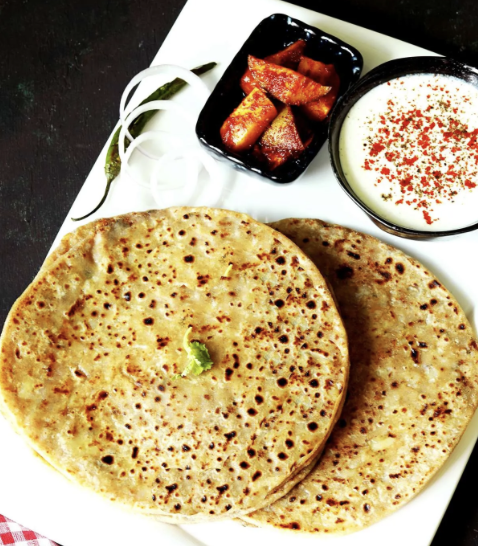

Aloo Paratha

Ingredients
- ¾ tsp garam masala
- ½ tsp red chilli powder
- ¾ to 1 tsp coriander powder
- ½ tsp chaat masala
- 1 green chilli chopped
- ¾ tsp ginger grated or paste
- ½ tsp salt
- 1 tsp kasuri methi
- ¼ tsp ajwain
- ½ tsp fennel powder
- 2 tbsps coriander leaves fine chopped
Instructions
- Add 2 cups whole wheat flour, ¼ teaspoon salt, 1 tablespoon oil and half cup water in a mixing bowl. Begin to mix adding more water as required to form a soft and non-sticky dough. Knead well until really soft and pliable.
- If you press down the dough, it should dent easily and must be soft. Cover and keep it aside until the stuffing is ready. I always rest my dough for a minimum of 30 minutes. If you prefer to skip the resting time, then knead it a little longer and use it right away.
- Boil the potatoes just until fork tender without making them mushy or water logged. If cooking in a pressure cooker, place the potatoes in the cooker along with 1 cup water. Pressure cook on a medium heat for 3 to 4 whistles depending on the size. If cooking in a instant pot, pressure cook them for 5 to 6 mins and wait for the pressure to drop naturally.
- When the potatoes cool down, peel them and grate or mash with a fork until it is smooth. There should be no pieces of potatoes left as they tear the aloo paratha while rolling. If your potatoes look sticky or pasty, then don't overdo the mashing. Instead use your fingers to break the tiny bits. You don't want a sticky potato filling.
- Run your fingers through the potato mash and break up any chunks of potatoes. This step is extremely important. Then add
- Mix all of these and taste test. Then add more salt or spices if needed to suit your taste. Divide the mixture to 8 equal portions.
- Divide the dough to 8 equal portions.
- Sprinkle little flour on the rolling area. Smoothen a dough ball and dip it in flour. Flatten it and roll to a 4 inch round roti/disc.
- Place a spiced potato ball in the center and bring the sides up.
- Press down the stuffing to the center and bring the sides higher giving it a cup shape. If the aloo stuffing is sticky, then smear your fingers generously with some flour.
- Bring the sides higher by simply rotating the whole thing on your hand in clock-wise direction. The dough gets stretched by itself and comes over the stuffing.
- Repeat this step of pushing the aloo inside and bringing the sides higher by rotating until the edges come over to the top.
- Join all the edges well to ensure no filling is visible. I do not remove any excess dough, instead press it down back to the ball.
- Dip this ball in flour on both the sides and gently flatten it with your fingers. This is very important so the filling is evenly spread all over the paratha.
- Place the sealed side down on the rolling area and gently roll it evenly without putting pressure. Do not roll the aloo paratha continuously. Instead rotate in clock-wise direction a little after every 4 to 6 rolls to ensure it does not tear or get stuck.
- After you are done rolling 3 to 4 paranthas, heat a griddle on a medium high flame. When the pan is hot enough, dust off excess flour from the aloo paratha & gently transfer it to the griddle. Within 2 minutes, you will see bubbles. Turn it to the other side.
- Press down gently with a spatula. You will see the aloo paratha begins to puff. Drizzle some ghee or oil. I add about 1 teaspoon ghee.
- Turn it to & fro to the other side and drizzle more ghee. Cook pressing down on the edges with a spatula so they cook well. Well-cooked parathas will leave your entire house filled with a great aroma. When you see golden to light brown spots on the aloo paratha, remove to a plate.
- To fry the next one, ensure the pan is hot enough and not extremely hot. Keep regulating the flame to medium or low as needed so the parathas don't burn. Place a clean cloth in a container or arrange a cooling rack & Stack the parathas to keep them moist.
- Enjoy!